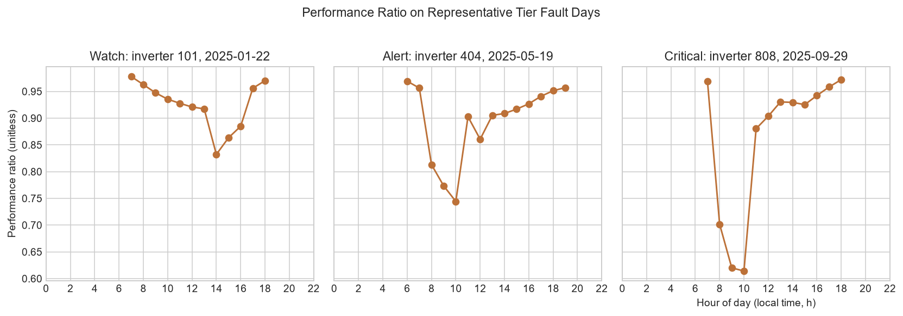

Inverters flagged
13 of 830
At least one qualifying rolling block.
Solar inverter PR monitoring
13 of 830 inverters were flagged: 4 Critical, 4 Alert, 5 Watch.
A gap is how far an inverter's performance ratio (PR) sits below the fleet median at the same hour. The rule flags 3 hours in a row averaging 0.05 or more.
13 of 830
At least one qualifying rolling block.
12/12
Designed tier tests detected in their own windows.
3/3
Hard cases remain outside the rule's intended detection.
0 across 815
Non-faulted inverters checked against the same simulated inputs.
Fleet
Signals
| Inverter | First flag | Last flag | Rolling blocks | Peak gap | Highest tier | Test target |
|---|---|---|---|---|---|---|
| 456 | 2025-11-18 12:00 | 2025-11-18 16:00 | 3 | 0.280 | Critical | Critical |
| 808 | 2025-09-29 08:00 | 2025-09-29 12:00 | 3 | 0.280 | Critical | Critical |
| 789 | 2025-12-24 12:00 | 2025-12-24 16:00 | 3 | 0.280 | Critical | Critical |
| 123 | 2025-10-09 12:00 | 2025-10-09 16:00 | 3 | 0.280 | Critical | Critical |
| 606 | 2025-07-08 13:00 | 2025-07-08 17:00 | 3 | 0.150 | Alert | Alert |
| 707 | 2025-08-21 12:00 | 2025-08-21 16:00 | 3 | 0.150 | Alert | Alert |
| 404 | 2025-05-19 08:00 | 2025-05-19 12:00 | 3 | 0.150 | Alert | Alert |
| 505 | 2025-06-25 08:00 | 2025-06-25 12:00 | 3 | 0.137 | Alert | Alert |
| 350 | 2025-03-04 13:00 | 2025-03-04 17:00 | 3 | 0.100 | Watch | Too short (expected miss) |
| 303 | 2025-04-17 14:00 | 2025-04-17 17:00 | 2 | 0.075 | Watch | Watch |
| 118 | 2025-02-21 13:00 | 2025-02-21 16:00 | 2 | 0.075 | Watch | Watch |
| 101 | 2025-01-22 13:00 | 2025-01-22 16:00 | 2 | 0.075 | Watch | Watch |
| 202 | 2025-03-11 14:00 | 2025-03-11 17:00 | 2 | 0.075 | Watch | Watch |
| Inverter | Block start | Block end | Mean gap | Tier |
|---|---|---|---|---|
| 456 | 2025-11-18 14:00 | 2025-11-18 16:00 | 0.280 | Critical |
| 808 | 2025-09-29 08:00 | 2025-09-29 10:00 | 0.280 | Critical |
| 789 | 2025-12-24 14:00 | 2025-12-24 16:00 | 0.280 | Critical |
| 123 | 2025-10-09 14:00 | 2025-10-09 16:00 | 0.280 | Critical |
| 808 | 2025-09-29 09:00 | 2025-09-29 11:00 | 0.199 | Alert |
| 123 | 2025-10-09 13:00 | 2025-10-09 15:00 | 0.197 | Alert |
| 456 | 2025-11-18 13:00 | 2025-11-18 15:00 | 0.194 | Alert |
| 789 | 2025-12-24 13:00 | 2025-12-24 15:00 | 0.193 | Alert |
| 606 | 2025-07-08 14:00 | 2025-07-08 16:00 | 0.150 | Alert |
| 707 | 2025-08-21 14:00 | 2025-08-21 16:00 | 0.150 | Alert |
| 404 | 2025-05-19 08:00 | 2025-05-19 10:00 | 0.150 | Alert |
| 505 | 2025-06-25 08:00 | 2025-06-25 10:00 | 0.137 | Alert |
| 707 | 2025-08-21 13:00 | 2025-08-21 15:00 | 0.109 | Alert |
| 404 | 2025-05-19 09:00 | 2025-05-19 11:00 | 0.108 | Alert |
| 505 | 2025-06-25 09:00 | 2025-06-25 11:00 | 0.107 | Alert |
| 606 | 2025-07-08 13:00 | 2025-07-08 15:00 | 0.104 | Alert |
| 606 | 2025-07-08 15:00 | 2025-07-08 17:00 | 0.101 | Alert |
| 123 | 2025-10-09 12:00 | 2025-10-09 14:00 | 0.101 | Alert |
| 808 | 2025-09-29 10:00 | 2025-09-29 12:00 | 0.100 | Alert |
| 350 | 2025-03-04 14:00 | 2025-03-04 16:00 | 0.100 | Watch |
| 350 | 2025-03-04 15:00 | 2025-03-04 17:00 | 0.100 | Watch |
| 456 | 2025-11-18 12:00 | 2025-11-18 14:00 | 0.099 | Watch |
| 789 | 2025-12-24 12:00 | 2025-12-24 14:00 | 0.097 | Watch |
| 303 | 2025-04-17 15:00 | 2025-04-17 17:00 | 0.075 | Watch |
| 118 | 2025-02-21 14:00 | 2025-02-21 16:00 | 0.075 | Watch |
| 101 | 2025-01-22 14:00 | 2025-01-22 16:00 | 0.075 | Watch |
| 202 | 2025-03-11 15:00 | 2025-03-11 17:00 | 0.075 | Watch |
| 303 | 2025-04-17 14:00 | 2025-04-17 16:00 | 0.062 | Watch |
| 118 | 2025-02-21 13:00 | 2025-02-21 15:00 | 0.060 | Watch |
| 202 | 2025-03-11 14:00 | 2025-03-11 16:00 | 0.059 | Watch |
| 404 | 2025-05-19 10:00 | 2025-05-19 12:00 | 0.057 | Watch |
| 101 | 2025-01-22 13:00 | 2025-01-22 15:00 | 0.056 | Watch |
| 505 | 2025-06-25 10:00 | 2025-06-25 12:00 | 0.055 | Watch |
| 350 | 2025-03-04 13:00 | 2025-03-04 15:00 | 0.053 | Watch |
| 707 | 2025-08-21 12:00 | 2025-08-21 14:00 | 0.053 | Watch |
Overlapping rolling blocks count separately.
Investigation

PR drops during the planted fault hours, and the drop grows from Watch to Critical.
| Inverter | Date and hour | Performance ratio |
|---|---|---|
| 101 | 2025-01-22 07:00 | 0.978 |
| 101 | 2025-01-22 08:00 | 0.963 |
| 101 | 2025-01-22 09:00 | 0.947 |
| 101 | 2025-01-22 10:00 | 0.935 |
| 101 | 2025-01-22 11:00 | 0.928 |
| 101 | 2025-01-22 12:00 | 0.921 |
| 101 | 2025-01-22 13:00 | 0.917 |
| 101 | 2025-01-22 14:00 | 0.832 |
| 101 | 2025-01-22 15:00 | 0.863 |
| 101 | 2025-01-22 16:00 | 0.885 |
| 101 | 2025-01-22 17:00 | 0.956 |
| 101 | 2025-01-22 18:00 | 0.970 |
| 404 | 2025-05-19 06:00 | 0.969 |
| 404 | 2025-05-19 07:00 | 0.956 |
| 404 | 2025-05-19 08:00 | 0.813 |
| 404 | 2025-05-19 09:00 | 0.773 |
| 404 | 2025-05-19 10:00 | 0.744 |
| 404 | 2025-05-19 11:00 | 0.903 |
| 404 | 2025-05-19 12:00 | 0.861 |
| 404 | 2025-05-19 13:00 | 0.905 |
| 404 | 2025-05-19 14:00 | 0.909 |
| 404 | 2025-05-19 15:00 | 0.917 |
| 404 | 2025-05-19 16:00 | 0.927 |
| 404 | 2025-05-19 17:00 | 0.941 |
| 404 | 2025-05-19 18:00 | 0.951 |
| 404 | 2025-05-19 19:00 | 0.957 |
| 808 | 2025-09-29 07:00 | 0.969 |
| 808 | 2025-09-29 08:00 | 0.702 |
| 808 | 2025-09-29 09:00 | 0.620 |
| 808 | 2025-09-29 10:00 | 0.614 |
| 808 | 2025-09-29 11:00 | 0.880 |
| 808 | 2025-09-29 12:00 | 0.904 |
| 808 | 2025-09-29 13:00 | 0.930 |
| 808 | 2025-09-29 14:00 | 0.929 |
| 808 | 2025-09-29 15:00 | 0.925 |
| 808 | 2025-09-29 16:00 | 0.942 |
| 808 | 2025-09-29 17:00 | 0.958 |
| 808 | 2025-09-29 18:00 | 0.972 |
Validation
The 12 designed faults were detected in their own windows. The 3 hard cases show the rule's limits: 2 gaps were below 0.05, and 1 fault lasted fewer than 3 hours.
| Inverter | Window | Target | Gap | Flagged by own window | Note |
|---|---|---|---|---|---|
| 101 | 2025-01-22 14:00 to 16:00 | Watch | 0.075 | Yes | Caught in its own window at the Watch level. |
| 118 | 2025-02-21 14:00 to 16:00 | Watch | 0.075 | Yes | Caught in its own window at the Watch level. |
| 202 | 2025-03-11 15:00 to 17:00 | Watch | 0.075 | Yes | Caught in its own window at the Watch level. |
| 303 | 2025-04-17 15:00 to 17:00 | Watch | 0.075 | Yes | Caught in its own window at the Watch level. |
| 404 | 2025-05-19 08:00 to 10:00 | Alert | 0.150 | Yes | Caught in its own window at the Alert level. |
| 505 | 2025-06-25 08:00 to 10:00 | Alert | 0.137 | Yes | Caught in its own window at the Alert level. |
| 606 | 2025-07-08 14:00 to 16:00 | Alert | 0.150 | Yes | Caught in its own window at the Alert level. |
| 707 | 2025-08-21 14:00 to 16:00 | Alert | 0.150 | Yes | Caught in its own window at the Alert level. |
| 808 | 2025-09-29 08:00 to 10:00 | Critical | 0.280 | Yes | Caught in its own window at the Critical level. |
| 123 | 2025-10-09 14:00 to 16:00 | Critical | 0.280 | Yes | Caught in its own window at the Critical level. |
| 456 | 2025-11-18 14:00 to 16:00 | Critical | 0.280 | Yes | Caught in its own window at the Critical level. |
| 789 | 2025-12-24 14:00 to 16:00 | Critical | 0.280 | Yes | Caught in its own window at the Critical level. |
| 150 | 2025-01-01 09:00 to 11:00 | Below Watch (expected miss) | 0.025 | No | Gap of 0.025 is below the 0.05 threshold, so no flag is expected. |
| 250 | 2025-02-04 14:00 to 16:00 | Below Watch (expected miss) | 0.035 | No | Gap of 0.035 is below the 0.05 threshold, so no flag is expected. |
| 350 | 2025-03-04 15:00 to 16:00 | Too short (expected miss) | 0.150 | No | The fault window is too short for the 3-hour rule. Its gap of 0.150 would be Alert, but neighboring normal hours dilute the 3-hour average, so the flag appears as Watch. |
Validation
0 false alarm blocks across 815 non-faulted inverters.
Non-faulted inverters share the same weather and simulated PR, so this does not test noisy real data.
Response
| Tier | Suggested action |
|---|---|
| Watch | Remote check, log, and monitor for 24 hours. |
| Alert | Attempt a remote reset and schedule a site visit within 72 hours. |
| Critical | Likely hardware fault; dispatch immediately. |
| Metric | Value |
|---|---|
| Pooled mean hourly PR | 0.929 |
| Shortfall from PR 1.0 | 0.071 |
| Clipping share, sample estimate | 2.1640% |
| Rolling blocks by severity | Watch: 16; Alert: 15; Critical: 4 |